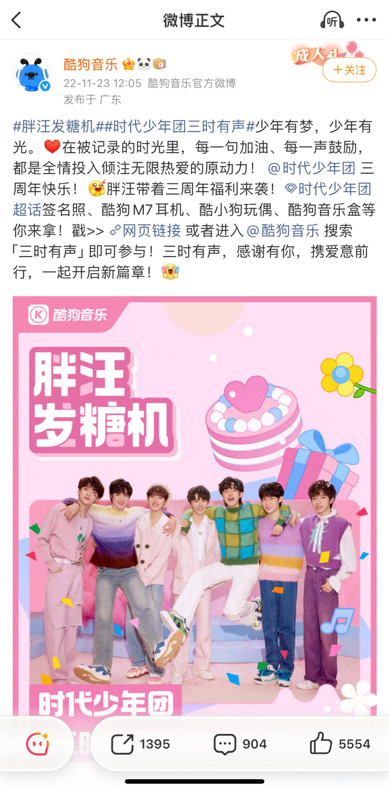
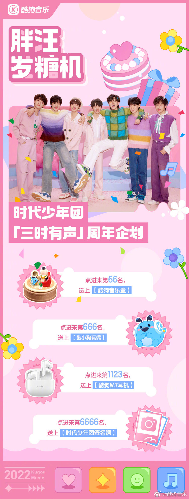

酷狗音乐 · 2019.06—2024.01
社媒矩阵与客户端引流
账号进入增粉趋缓阶段后，我把微博运营重点转向客户端拉新与促活，并带领专员维持其他平台的内容供给。
我负责的工作
- 打通站内承接
提出与微博合作开通客户端跳转，协调产品经理、APP 运营确定承接路径。已安装用户可跳转到相关站内内容，未安装用户进入下载页。
- 把活动做成每月固定项目
根据明星粉丝的签到、打榜和超话互动习惯策划「胖汪发糖机」，与产品、设计沟通 H5 玩法。根据 A/B 内容测试和反馈调整主题、门槛和福利，后续形成月度固定活动。
- 用分工维持多平台更新
独立负责微博选题、文案与活动，管理两名专员。专员承担其他平台的内容制作与剪辑，我把控选题、脚本和内容审核。


整体引流项目
256万 人次累计引流 21万 名纯新增用户
发糖机活动总结
8万 人次累计参与 2.2万 人次拉新及促活
查看平台分工与站内栏目
- 微博
- 独立策划热点、新歌、艺人节点及粉丝活动，承担主要引流任务。
- 公众号
- 推动官号从单一音乐内容调整为「音乐内容＋产品功能」，用新歌或人物话题带出使用方法及收听入口。
- 抖音与小红书
- 抖音用音乐现场呈现蝰蛇音效，小红书用话题征集和粉丝投稿组织参与。团队负责制作，我统筹内容审核。
- 站内栏目
- 负责《入梦晚安电台》等专项栏目，晚安电台持续上线 26 期。阶段内拉新 60,590 人、拉活 71,999 人，按栏目口径独立统计。


 日夜精华油
日夜精华油 逆时光洁颜霜
逆时光洁颜霜